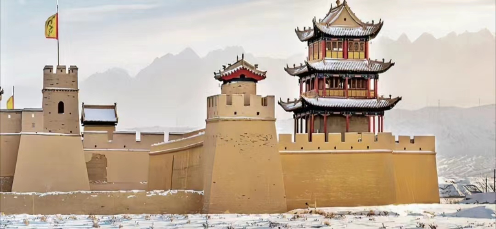
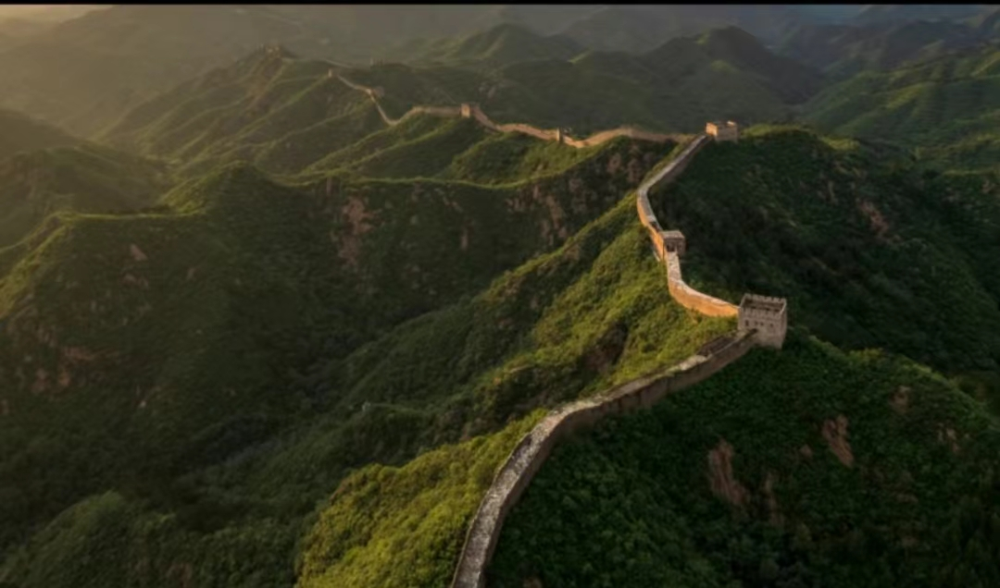
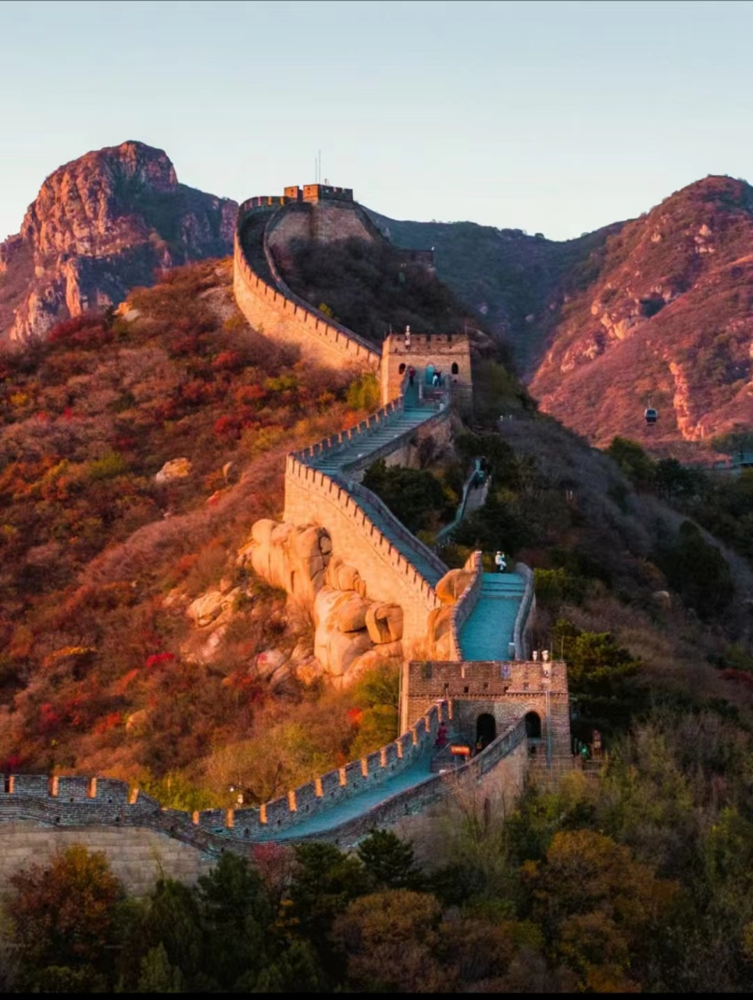
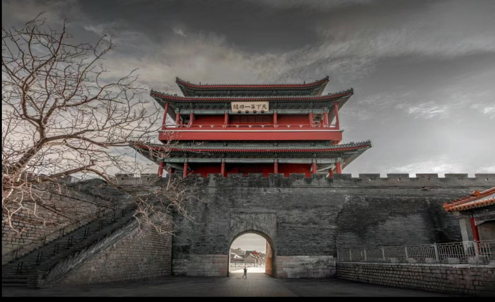

|  | 嘉峪关
位于甘肃省嘉峪关市西5千米处最狭窄的山谷中部，城关两侧的城墙横穿沙漠戈壁，北连黑山悬壁长城，南接天下第一，是明长城最西端的关口，历史上曾被称为河西咽喉，因地势险要，建筑雄伟，有连陲锁钥之称。嘉峪关是古代“丝绸之路”的交通要塞，中国长城三大奇观之一(东有山海关、中有镇北台西有嘉峪关)。 |
| 金山岭
位于河北省承德市滦平县境内，与北京市密云区相邻，距北京市区130千米。金山岭长城始建于明洪武元年(公元1368年)为大将徐达主持修建。金山岭长城，是万里长城的精华地段，素有“万里长城，金山独秀"之美誉。障墙、文字砖和挡马石是金山岭长城的三绝，素有“摄影爱好者的天堂”美誉。金山岭长城，是全国重点文物保护单位、国家级风景名胜区、国家5A经旅游景区，并列入《世界文化遗产名录》。1992年11月15日亚洲“飞人“柯受良驾驶摩托车成功飞越了金山岭长城。 |
 |
|  | 八达岭
位于北京市延庆区军都山关沟古道北口。是中国古代伟大的防御工程万里长城的重要组成部分，是明长城的一个隘口。八达岭长城为居庸关的重要前哨，古称“居庸之险不在关而在八达岭。明长城的八达岭段被称作“玉关天堑”，为明代居庸关八景之一。八达岭景区是全国文明风景旅游区示范点，以其宏伟的景观、完善的设施和深厚的文化历史内涵而著称于世，是举世闻名的旅游胜地。 |
| 居庸关
是京北长城沿线上的著名古关城，也是中国的城堡之一。“天下九塞”之一,“太行八陉”之八，国家级文物保护单位。关城所在的峡谷，属太行余脉军都山地，西山夹峙，下有巨涧，悬崖峭壁，地形极为险要。居庸关与紫荆关、倒马关、固关并称明朝京西四大名关，其中居庸关、紫荆关、倒马关又称内三关。居庸关同样号称“天下第一雄关”，与嘉峪关相似，但是两关的东西位置不同，且嘉峪关比居庸关修筑时间更早。相当于嘉峪关(建于1372年)比山海关(建于1381年)早建九年。 |  |